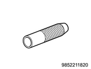

Counter shaft reassembly (MUX)
1. 2nd counter gear installation
1. Apply the oil to the 2nd needle bearing.
Note
- Apply the recommended lubricating oil to the needle bearing and gear inner surface.
2. Install the 2nd needle bearing to the counter shaft.
3. Install the 2nd counter gear to the counter shaft.
Note
- Install the 1st - 2nd inside ring, 1st - 2nd outside ring, and the 1st - 2nd block ring.
2. 1st - 2nd synchronizer assembly reassembly
1. Assemble the 1st - 2nd clutch hub.
Note
- Confirm that the clutch hub and sleeve slide smoothly.
- Confirm that the insert is installed to the groove of the clutch hub correctly.
- Confirm that the insert spring is installed to the insert correctly.
- Set the insert spring in such a way that the openings of the spring face the different directions.
- Insert
- Insert spring
- Sleeve
- Clutch hub
3. 1st - 2nd synchronizer assembly installation
1. Install the 1st - 2nd synchronizer assembly to the counter shaft using special tool.
Note
- Firmly fit the 1st - 2nd inside ring, 1st - 2nd outside ring and 1st - 2nd block ring using a press and bearing installer.
- When installing, apply the recommended lubricating oil to the inner surface of the 1st - 2nd block ring.

SST: 9-8522-1182-0 - bearing installer
- Bearing installer
4. 1st counter gear installation
1. Install the 1st needle bearing to the counter shaft.
Note
- Apply the recommended lubricating oil to the needle bearing and gear inner surface.
2. Install the 1st gear to the counter shaft.
3. Install the snap ring to the counter shaft.
Note
- Install a new snap ring.
Caution
- Do not reuse the snap ring.
5. 1st counter gear collar installation
1. Install the 1st counter gear collar to the counter shaft using special tool.
Note
- Firmly fit the 1st counter gear collar until it contacts with the 1st - 2nd synchronizer assembly using a press and bearing installer.
SST: 9-8522-1182-0 - bearing installer
- Bearing installer
2. Install the snap ring to the counter shaft.
Note
- Install a new snap ring.
- Check the installation position of the snap ring for out of alignment.
Caution
- Do not reuse the snap ring.
6. Counter reverse gear installation
1. Install the counter reverse gear to the counter shaft.
Note
- Install the needle bearing and the reverse block ring.
- Apply the recommended lubricating oil to the needle bearing and gear inner surface.
7. Reverse synchronizer assembly installation
1. Install the reverse synchronizer assembly to the counter shaft using special tool.
Note
- Firmly fit using a press and bearing installer.
- When installing, apply the recommended lubricating oil to the inner surface of the reverse synchronizer assembly.

SST: 5-8840-2244-0 - bearing installer
- Bearing installer
8. Counter shaft front bearing installation
1. Install the counter shaft front bearing to the counter shaft using special tool.
Note
- Press the counter shaft front bearing inner race using a press and gear collar installer.
SST: 5-8840-2346-0 - gear collar installer
- Bearing installer
Note
- Install the counter shaft front bearing outer race.
- After installation, confirm that the counter shaft front bearing outer race moves only in the direction indicated by the arrow.
- Counter shaft front baring outer race
2. Install the snap ring to the counter shaft using a snap ring pliers.
Note
- Install a new snap ring.
- Check the installation position of the snap ring for out of alignment.
Caution
- Do not reuse the snap ring.
9. Counter middle roller bearing installation
1. Install the counter middle roller bearing to the counter shaft using special tool.
Note
- Firmly fit the counter middle roller bearing inner race using the press and bearing installer.
SST: 5-8840-2847-0 - bearing installer
Caution
- The flange section of the counter middle roller bearing inner race should be installed facing the shaft section.
- The counter shaft inner race should be fitted until it hits the counter shaft.
- Bearing installer
Note
- Install the counter shaft rear bearing outer race.